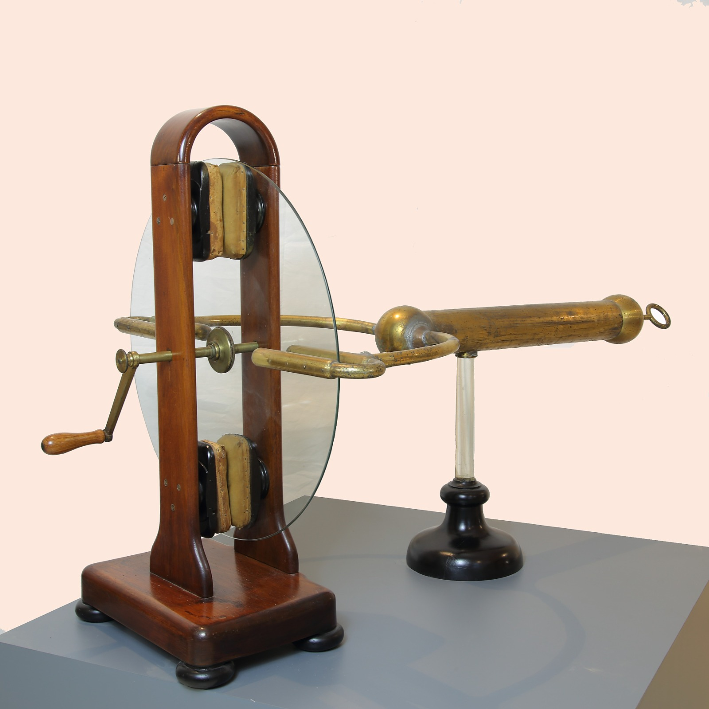

Macchina elettrostatica
Scuola di provenienza: Liceo Classico "P. Colletta", Avellino
Settore: Elettrostatica
Costruttori: Sconosciuto
Materiali: Legno, vetro e ottone
Accessori: Nessuno
Stato di conservazione: Spaccato l’arco in ottone e la base in legno
Descrizione: Macchina elettrostatica a disco di tipo inglese. Non corretta la denominazione “di Ramsden” poiché venne utilizzata sui testi francesi solo nell’ottocento. Difficile dire dove fu costruita nella prima metà del XIX sec. Il disco di vetro strofinando tra due coppie di cuscinetti di cuoio (16x6) riempiti di crine, si elettrizza. La carica elettrica viene raccolta da venti punte di due pettini diametralmente opposti, solidali con un tubo lungo circa un metro, alla fine del quale è posizionato un anello al quale può essere sospeso un pendolino elettrostatico. La parte in ottone poggia con un tubo di vetro su una base di legno circolare; la parte in legno è a se stante: una sua parte è solidale con la base l’altra è smontabile per consentire la sostituzione del disco o dei cuscinetti.